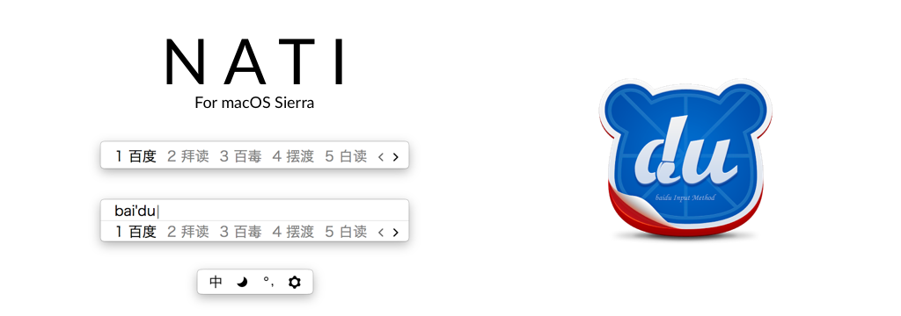
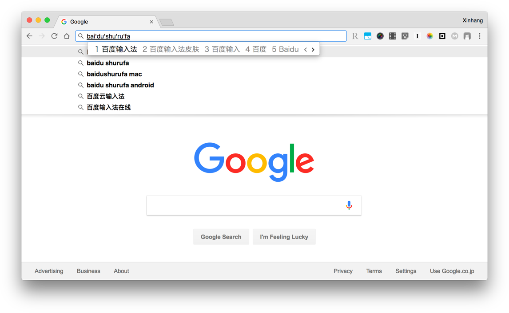

做了款百度输入法 for macOS 的皮肤

Mac 上拼音输入法只有几款。原生拼音输入法词库不行，鼠须管配置起来挺麻烦，懒得搞。先前一直在用搜狗输入法，但是打开菜单一大堆我用不上的功能，看着真心不舒服。现在转用百度输入法。使用起来挺流畅的，功能正好。但是翻遍了官网的皮肤，都不是很喜欢，太花哨。于是就自己动手做了一款非常简单的皮肤，名字叫 「Nati」（取自 native），希望能像原生输入法一样契合 macOS。
做完才发现皮肤居然不能上传？？就放博客里吧。
